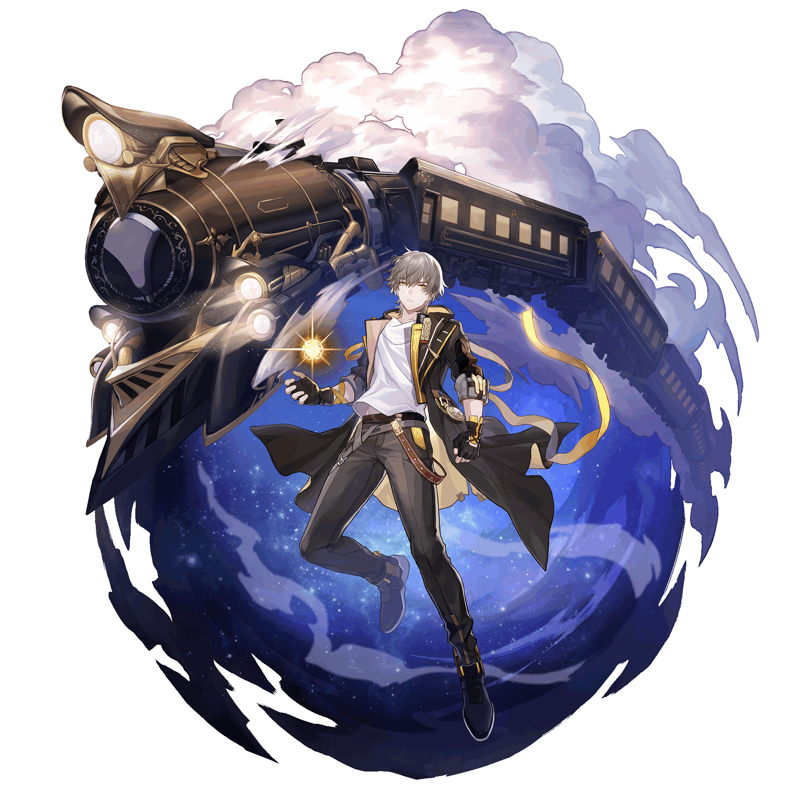
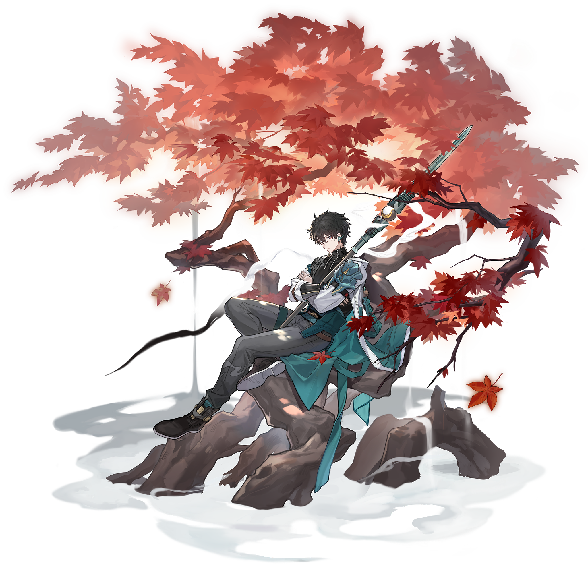
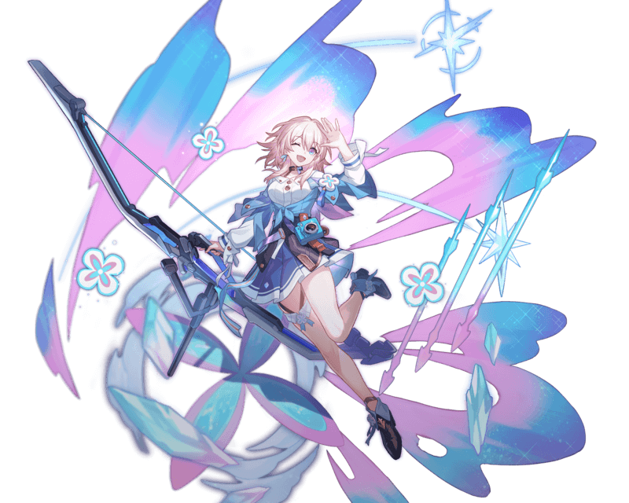
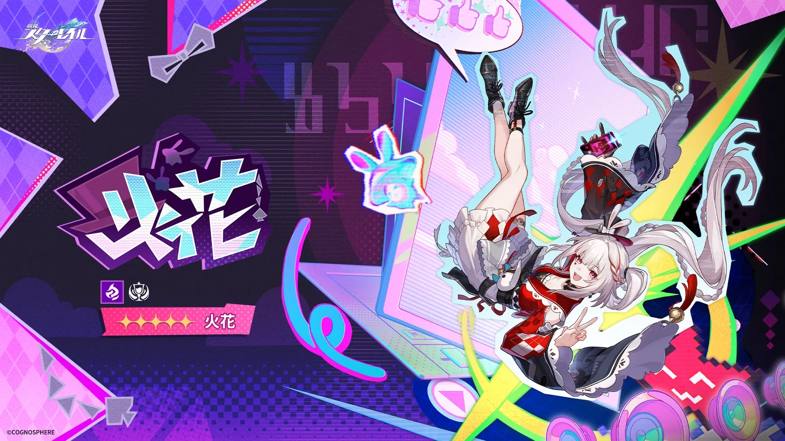
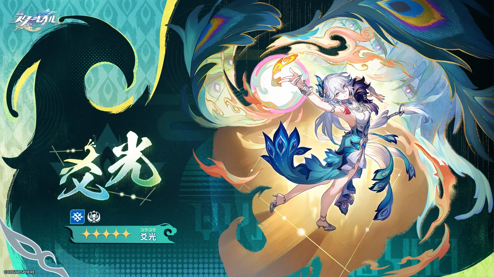

開拓者
運命：壊滅 / 属性：物理
物語の主人公。宇宙ステーション「ヘルタ」が襲撃された際、体内に「星核」を宿す器として目覚めた。
銀河を駆ける「星穹列車」の一員となり、失われた記憶と、自らの内に眠る星核の謎を解き明かす旅に出る。
バットを武器に戦う「壊滅」の姿以外にも、旅路で訪れる惑星の意志を継ぐことで、異なる運命と属性に目覚める可能性を秘めている。

丹恒（たんこう）
運命：巡狩 / 属性：風
星穹列車の護衛であり、冷静沈着な記録員。過去の出来事から逃れるために列車に乗り込んだ。
愛槍「撃雲」を手に、風のような速さで敵を穿つ。「巡狩」の運命に違わぬ、単体への圧倒的な攻撃能力を誇る。
あまり多くを語らないミステリアスな性格だが、仲間のピンチには真っ先に駆けつける。彼の過去は、仙舟「羅浮」の歴史と深く関わっている。

三月なのか
運命：存護 / 属性：氷
漂流していた万年氷の中から救出された、明るく元気な少女。自分の名前すら忘れていたため、救出された日を名前にした。
常に「六相氷」の弓とカメラを携え、銀河の美しい景色や仲間との日常を写真に収めることを楽しみにしている。
バトルの要となる強力なシールドを仲間に付与する「存護」の使い手。彼女がいつか自分の過去を思い出す日は来るのだろうか。

火花
運命：愉悦 / 属性：量子
近頃二相楽園で急速に頭角を現し、現地で知らぬ者はいないほどのトップに上り詰めた動画配信者。ファン(リスナー)の総称はヒバナーと呼ばれ、彼女の意のままに暴徒と化す熱狂的なファンも少なくない。
「『銀河打者』さん、いらっしゃ～い。こんひばな～今日も1日、脳汁どばどばで行くよ～！このきらびやかな世界で、火花みたいにキラキラしちゃってね～♥」

爻光（こうこう）
運命：知恵 / 属性：虚数
天意を読み、未来を予測することに長けた謎多き賢者。世の理を数式のように捉え、常に一歩先を見据えた行動をとる。
その瞳には過去と未来が同時に映っていると言われ、彼女の助言一つで文明の興亡が決まることもあるという。
「天意に逆らうのは難しい」と語る彼女だが、開拓者の存在だけは彼女の予測を超えた未知の変数として興味を抱いている。